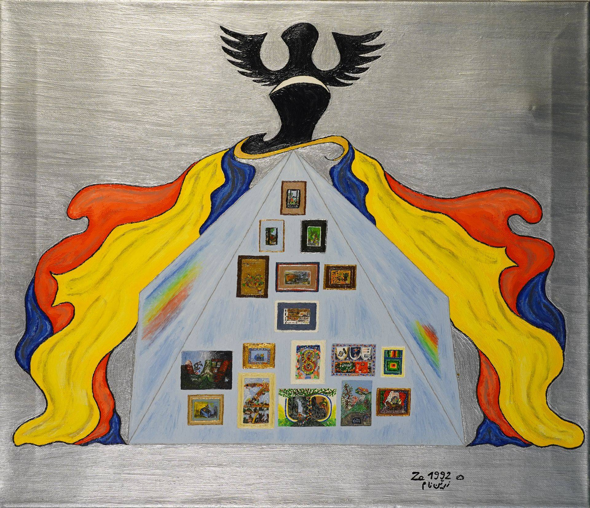

„sichten, um zu malen – malen, um zu sehen“
Künstlerin • Malerei • 1971–2023
Gut fünfzig Jahre umspannt dieses Werk, von der persischen Landschaft des Jahres 1971 bis zum Bild „Papier“ aus dem Todesjahr 2023. Am Anfang steht das Eigene: die Familie in den „Blauen Engeln“, das Alleinsein in „Einsamkeit“, das Haus und der Garten in Heinsberg in „Zuhause“. Lange bleiben die Anlässe biografisch – die Übernahme der Praxis durch den Sohn 1999, das Analysegerät von 2003, die Zweisamkeit von 2004, der Strauß zur Geburt des Enkels 2005, die Edelsteinschatulle des „Zauberwürfels“. Doch je weiter das Werk voranschreitet, desto mehr weitet sich der Blick vom Familienalbum zur Welt. Ihre Ideen fand sie dabei oft in Zeitungsartikeln und Büchern. Medien und Digitalisierung, Codes aus Null und Eins, Warenkorb und Eurozeichen treten ins Bild, und mit Donald Duck, dem Mainzelmännchen und den Simpsons hält die Popkultur Einzug. Grundzeichen durch alle Jahrzehnte ist das Prisma, Zeichen der Erkenntnis und zugleich der Aufspaltung in Einzelteile, getreu dem Motto „sichten, um zu malen – malen, um zu sehen“. In „Zuversicht II“ und „Gedankengut“ wird das Prismagesicht zum Selbstbildnis: Die Malerin zeigt sich als das Glas, durch das das Licht in seine Farben fällt. Folgerichtig setzt sie das Prisma rechts unten neben ihre Unterschrift, in deutscher und in persischer Schrift. Das Auge ist das zweite Grundmotiv, genährt aus der Augenheilkunde, die das Familienleben von Iran bis Heinsberg begleitet hat. Der Apfel steht für die Erkenntnis, vom „Apfel“ des Jahres 1993 bis zum Bücherregal in „Gedankengut“. Die Jahreszeiten gliedern viele Tafeln, und der rheinische Karneval feiert darin ebenso mit wie Silvester mit seinem Feuerwerk. Ein wiederkehrendes U deutet leise an, dass manches Bild mehr erzählen will, als es zeigt. Küssende Köpfe bezeichnen die Liebe, von „Motivation“ bis zum Herz im „Kalender“. Späte Synthesebilder führen die Zeichen zusammen und bilden ein Vokabular, das sich wie ein Werkverzeichnis selbst zitiert. So ist dies eine persisch-rheinische Doppelprägung: Ornament und Miniatur des Orients begegnen Dom, Kirchturm und Fernsehfigur des Rheinlands. Formal bleibt die Malerin der Bildtafel treu, der Bühne, auf der die Dinge nebeneinander auftreten, gemalt im feinen Haarpinselduktus. Alles tönt in Dur, selbst dort, wo die Themen ernst werden. Das Werk lässt sich insgesamt als Brechung im Prisma lesen: Das eine, persönliche Licht fächert sich in die vielen Farben der Welt auf. Wie im „Baum“ wachsen aus den Wurzeln der Familie die Früchte des Allgemeinen. Und im letzten Bild, „Papier“, steht noch einmal ein Anfang: das leere Blatt, von dem jedes Bild ausgeht.
Die Kunst überlebt, der Künstler nicht. Der Künstler ist nur Beiwerk. Ich kann beisteuern, meine Energie, damit die Kunst an die Macht kommt. Damit die Kunst sich platziert.
— Jonathan Meese
Eine Entdeckung im wortwörtlichen Sinne: Vom faszinierend-hermetisch-malerischen Werk der Doris Zarrinnam wird die Decke seines Versteckseins genommen! Seit spätestens 1971, vor allem aber seit 1992, entäußerte die bisher unbeachtet gebliebene Künstlerin bildlich ihre ästhetisch betörenden, in weiten Teilen außerbildlich nur ihr anschaulich gewesenen Weltsichten. Sie schöpfte diese, immer tiefer in ihre Zurückgezogenheit vordringend, hauptsächlich aus sich und ihren Introspektionen! Zwischen Bildern aus einer auch uns zugänglichen Wirklichkeit und der genuin ihren, die offenbar auch von wunderlichen Träumen und Vorstellungen dominiert war, oszilliert der hier erstmals breiter öffentlich anschaulich werdende Bilderkosmos. Der Horizont dieses Kosmos’ ist menschenweit, ihre Welt hingegen war eng gegrenzt wie die ihrer Formate.
Als sie für einige Zeit in Teheran wohnte, malte sie noch eine vor ihr sich breitende Landschaft. Das ist inzwischen über 50 Jahre her. Sie lebte dort mit ihrem persischen Mann. Aus hügelerhöhter Position ist dieses frühe Bild gemalt. Ihr Standpunkt ist vorne links durch ein unhohes Mäuerchen sicher geortet. Sie gab das von ihr Gesehene wieder: sicher in der Perspektive, fernere Details lediglich schemenhaft sichtend, vom harten südlichen Licht und den fest umrissenen Schattenwürfen der Bäume im Mittelgrund inspiriert, die Asphaltstraße pittoresk akzeptiert, den Vordergrund als Bildeinblick offen …
Es ist ein fraglos privat wertvolles Bild. Ferner offenbart es aber ebenso malerisches Talent wie kompositorische Sensibilität. Es zeigt, dass der Blick der Malerin in die Landschaft mit der Absicht gerichtet wurde, die Aussicht nicht nur vor Ort zu sehen, sondern eine „Landschaft“ bildlich fassen zu wollen. Unzweideutig tritt mithin ein Sehen, um zu malen, bereits in diesem Bild schon auf.
Zwanzig Jahre später begann Doris Zarrinnam ihr Malen zu intensivieren. Das Malen wird sogar, wie ihr Sohn Dirk-Bijan heute berichtet, ein Lebensanker. Denn sie zog sich zurück, um zu malen – geistig wie räumlich. Lediglich im Jahre 1995 stellte sie ihre Bilder einmal in Heinsberg aus.
Ihre Bilderwelten entstammen fortan motivisch nur noch eingeschränkt einem gleichsam objektiviert zu sehenden Äußeren. Etwas Surreales, Fantastisch-Realistisches, Nebenweltliches eignet ihnen. Sie zeigen nur noch bedingt, was auch wir mit ihr gemeinsam hätten sehen können. Und das, was wir gemeinsam hätten sehen können, zeigt sie anders gesehen. Außerbildlich Gebundenes wird mit innerlich Visioniertem kombiniert.
Man kann es mit Wassily Kandinsky das Geistige nennen, man darf es auch als Privat-Symbolisches begreifen wollen, man muss aber wohl auch von Entäußerungen im Sinne des Kunsthistorikers und Psychiaters Hans Prinzhorns sprechen. Solche setzte der Gründer der Heidelberger Sammlung in seiner berühmten Abhandlung Bildnerei der Geisteskranken als einen „allgemein menschlichen Kernvorgang“ mit Leo Tolstois Kunstauffassung in Beziehung.
Doch mit dieser „Schublade“ wird man den Werken nicht gerecht. Denn die Malerei Doris Zarrinnams vereinnahmt durch ihre eigenständigen ästhetischen Qualitäten, durch konsistente Bildfindungen, ja: Er-findungen. Sie laden ein in nur in ihnen zu findenden Fremdheiten, die schon aufgrund ihres Fremdseins alle mehr oder weniger nur kontextbestimmten Einschränkungen künstlerisch hell überstrahlen.
Zu simpel erscheint es mithin, die hier vorzustellende Malerei mit vorauseilendem Gehorsam aufgrund eines übermittelten psychiatrischen Befundes (nur) pathografisch zu beschreiben. Karl Jaspers unternahm solch einen „Versuch“ zu August Strindberg und Immanuel Swedenborg, zu Vincent van Gogh und auch zu Friedrich Hölderlin. Er unterfütterte mit seinem Versuch über diese vier Größen unseres Kulturkreises nachdrücklich, dass womöglich primär – oder doch zumindest auch – psychopathologisch zu Deutendes dem individuellen Erwirken von überwältigend Künstlerischem nicht nur nicht im Wege steht, sondern dieses auch oder sogar überhaupt erst zu bedingen vermag.
Gleichwohl oder in Folge dessen gilt es hier festzuhalten, dass – so der Sohn – sich Doris Zarrinnam ab Anfang, Mitte der 90er Jahre signifikant aus ihrem zuvor gelebten sozialen Umfeld in den Elfenbeinturm ihrer Malerei zurückzog. Sie cocoonte sich gleichsam wie eine Nonne in ihr Skriptorium ein, um ihre Bilder malend zu schreiben.
Dieses Sich-Zurückziehen gilt es zwar zu benennen, nicht aber als Stigma zu begreifen. Darum wird hier im Kursorisch-Folgenden auch vor allem die offen sichtliche (sic) ästhetische Präsenz ihrer Bilder betont. Ihre Werke wollen folglich nicht als bloßer Kontakthof begriffen werden. Vielmehr wird mit Nachdruck behauptet, dass es sich lohnt, ihre Bilder schauend zu betrachten. Sie zu betrachten, birgt Gewinn.
Die Farbigkeit des hinterlassenen Werks der 2023 Gestorbenen ist licht. Die Farben sind klar, oft einer geweißten Palette entstammend. Die Stimmungen sind tageslicht positiv, infantil, unschuldig. Selbst im Dämmerlicht klingen viele ihrer Bilder hell. Alles tönt in Dur – und das selbst aus solchen Bildern, in denen motivisch Melancholie herrscht.
Die Bildanlagen sind flächig hinterfangen. Jedes Bild ist eher ein Tableau denn eine Perspektive. Skizzenhafte Farbanlegungen, Untermalungen, die zum Eigenwert drängen, nicht unähnlich, bezeugen ein gekonnt zweidimensionales, ornamentales, teilweise sogar auch gegenstandsbefreiendes Bildwollen. Die Bildflächen werden so zu Ebenen, auf denen die Malerin prosaisch ihre Geschichten breiten kann. Zarrinnams Bilder gleichen auf diese Weise oft Plattformen oder im metaphorischen Sinne den Brettern, also den Bühnen, auf denen sich ihre Welten und Erzählungen ereignen.
Formale Nähen zu persischen Miniaturen scheinen auf, zu Flächen verdichteten Bildräumen, in denen aus der Perspektive genommen stabpuppenhaft Szenen vorgestellt werden. Erinnerte oder erträumte Begegnungen, faktische oder ersehnte Ausblicke, vermutlich aufgeladene Gegenstände, die Kubatur des Aachener Klinikums, ein gläsernes Verlies, ein orientalischer Teppich, der mangels Erdung zu fliegen scheint, ein aus seinem Inneren strahlendes Gebäude oder auch nur ein Dinet, ein kryptischer Notenschlüssel oder eine Äskulapnatter, die einen zur Mumie Erstarrten umschlängelt. Oder auch eine evatrunkene Apfelpflückerin unter dem entzweienden Baum des Sündenbewusstseins sowie eine lippenbegrabene Odaliske.
Selbst kleine Retrospektiven ihres Bildschöpfens hat sie immer wieder gemalt – ihre autonomen Bilder als Vignetten wiederholt und einmal sogar, gleich 1992 in „Prisma“, unter einen madonnenhaften Schutzmantel geschützt. „Sprache der Malerei“ nannte sie diese Bilderreihe.
Auf einem anderen Werk fließt aus einer Farbentube ihre Welt ins Bild. „Besinnung“ ist es betitelt. Eine Verwandtschaft zum Bild „Garden“ und zu dem an ihrem Haus angelegten Garten, einem Hortus conclusus, einem Mikrokosmos in Heinsberg, scheint auf. Auf einem anderen Bild finden wir eine Doppelhelix. Die genetische „Zukunft“ – so der Bildtitel – wird Bild in einer Transformation von schwarz-weißen zu farbigen Sprossen oder vice versa. Ebenenverschachtelt bildete die Künstlerin ihr „zu Hause“. Epigrammatisch wird das Abstraktum „Mut“ vorgestellt.
Es sind zugegeben Schöpfungen aus einer nicht immer einfach zugänglichen Gedanken- und Visionenwelt, die uns diese Bilder erst einmal zu sehen, dann versuchend zu entschlüsseln und womöglich nie zu verstehen geben. Allgemein zu kennende Versatzstücke verschränken sich mit hermetischen Codes, Begegnungen mit nicht wiederzuerkennenden Szenen, Ausblicke mit Einblicken, Darstellungen mit Vorstellungen…
Und die Malweise? Die Bilder sind mit der Zeit immer mikrostrukturierter. Feinhaarpinselduktus an Feinhaarpinselduktus sind gesetzt, ersetzen anfänglich noch kurze Pinselschwünge. Besessenheit und eine schier unendliche Geduld werden spürbar, mit der die Bilder gemalt wurden. Nie scheint es einen Abgabetermin gegeben zu haben, nie einen äußeren Grund, sie zu malen. Ohne vollkommene Selbstbestimmt- und Unentfremdetheit ist es nicht vorstellbar, dass dieses Oeuvre aus über 300 Werken gewachsen ist.
Eine Konzentration wird anschaulich, wie man sie in der neueren Kunstgeschichte auch von Werken einer Agnes Martin oder Max Cole kennt. Mit einer für mich als Betrachter nur sehr schwer auszuhaltenden Geduld, stoischer Ruhe und Besessenheit konnte ich einmal miterleben, wie Max Cole ihre Bilder Strich für Strich „schrieb“. Nachts, bei Kunstlicht und von draußen hineindringenden Schreiereien und Sirenengejaule der Polizei in der Lower East Side New Yorks. Auch Yayoi Kusamas Frühwerk aus den 70er Jahren drängt sich im Vergleich auf. Oder die riesigen Werke von Giovanni Segantini in seinem Museum in Sankt Moritz, der die „Durchsichtigkeit der Luft“, wie es Michael Köhler treffsicher formulierte, gleichermaßen wie Doris Zarrinnam ihre kleinen Formate „gestrickt“ hat.
Wir sind an einer profund durch Prinzhorn 1921-23 gestellten, bereits zeitgleich, 1922 (1949), von Jaspers philosophisch diskutierten und gleich 1937 von unseren Nationalsozialisten in ihrer Ausstellung „Entartete Kunst“ pervers beantworteten Grundsatzfrage nach der zumindest Auch-Wesensmöglichkeit von Kunst angelangt: Vermag Kunst nur das zu sein, was sich einem akademisch und infolgedessen intellektualistisch fundierten Kunstwollen verdankt, oder auch – und womöglich sogar notwendigerweise: hauptsächlich – das, was einem eher zwanghaft Unterbewussten entquellt?
Harald Szeemann, der mit Werner Hofmann und Jean-Hubert Martin wohl am nachdrücklichsten intuitiv-intellektuell gegen den Strich denkende Kurator des 20. Jahrhunderts mit sowohl kunst- wie kulturgeschichtlichem Anspruch, beantwortete diese Frage 1963 mit seiner Ausstellung Bildnerei der Geisteskranken. Art Brut. Insania pingens in der Kunsthalle Bern eindeutig mit einem Ja! Ja, er schied fortan sogar auch in seinen weiteren Ausstellungen nicht mehr die einen von den anderen Künstler*innen und betonte auch nicht mehr ausdrücklich die je differenten Wege der Jeweiligen zur Kunst. Allein die Werke waren für ihn entscheidend. Denn die Bilder kommunizieren schließlich unmittelbar mit den Betrachtern und sind als solche weit mehr als nur Membran zwischen malend Sichtenden und Malerei Sehenden.
Emma Kunz und Paul Klee wurden durch Harald Szeemann gleichbedeutend. Er überantwortete die jeweiligen Werke unserer je eigenen ästhetisch emanzipierten Erkenntnisbereitschaft und unserer immer subjektiven und dennoch aufgeklärten Genussfähigkeit.
Vor diese individualisierte Urteilsfindung wird auch das Werk Doris Zarrinnams mit dieser Publikation gestellt: Wer kann sich diesen Bildern entziehen, diesen fremdartigen Erzählungen wie in einer Novelle ohne Anfang und Ende? Wer hat den Wunsch, sich den unbedarften Farbwelten zu verschließen, wer nicht den, für sich den Gewinn aus diesen Bildern zu ziehen, den, sich zu konzentrieren (mit ihr sich ins Zentrum zu begeben)? Wer kann sich angesichts dieser Bilder der Erkenntnis verweigern, dass eine infantile Grundstimmung ein Quantum Kontinuum unseres Lebens ist? Geträumtes und Erlebtes wunderlich zu sichten, ist nicht gleich pathologisch, sondern nicht selten auch nur Nichtverdrängung. Und wo denn in der Kunst soll dieses in uns allen vorhandene Innere noch nach außen sichtbar werden?
Die gemalten Sichten Doris Zarrinnams zeigen ohne Wenn und Aber, dass ihr Malen sichtbar macht, was genuin nur so sehend zu entdecken ist. Sie sind ihre Vorstellungen, wie wir Vorstellungen aus dem Theater kennen: Aus einem Lesestoff, einem Libretto, der Schilderung von Erlebtem wird eine Dramaturgie. Aus dieser entwickelt die Regie eine Aufführung mit Schauspieler*innen und Kulissen für die Bühne. Das Resultat ist eine Vorstellung, die die jeweiligen Vorstellungen vom Stoff – die von den Autor*innen, Dramaturg*innen, Regisseur*innen, Bühnenbildner*innen und Schauspielenden oder eben wie von einer Malerin – vorstellt, um schlussendlich im Publikum Vorstellungen zu erwirken wie die der ermalten Bilder von Doris Zarrinnam.
Raimund Stecker
Düsseldorf, im März 2026